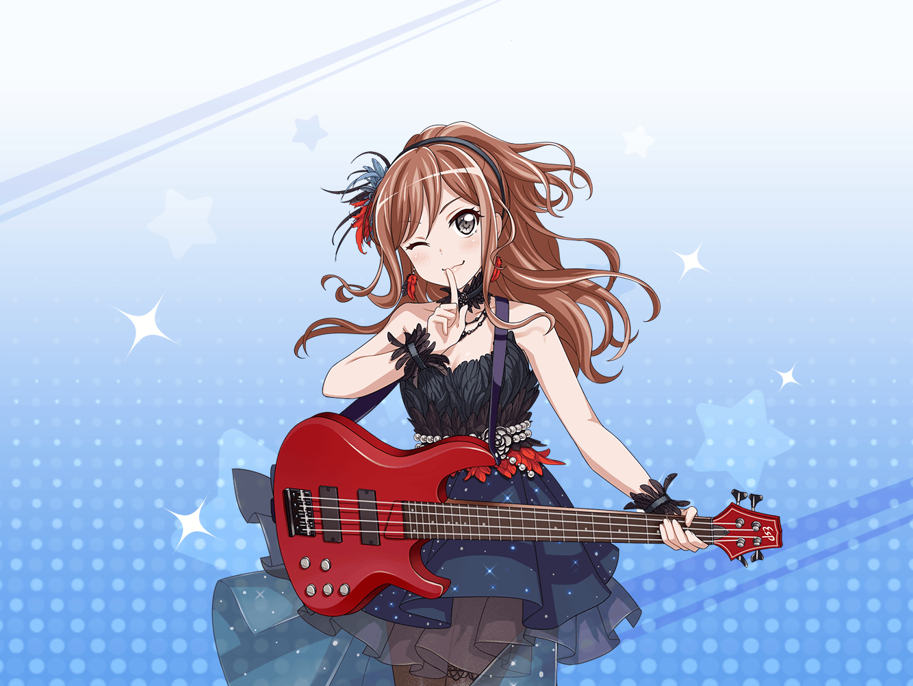
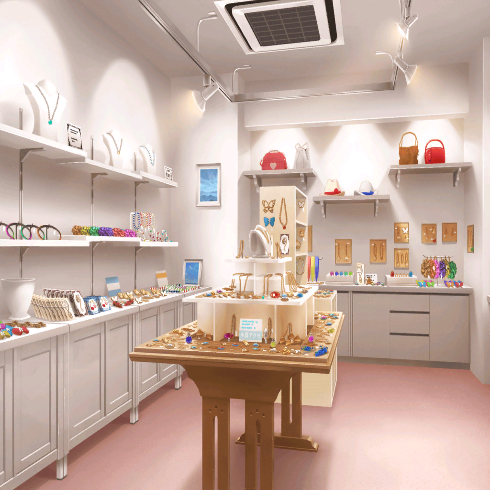

リサ
あ～、ライブ楽しかったー！！
友希那
さっきからそればかりね
リサ
だって、あんなに盛り上がったんだよ？
楽しくないわけないって！
リサ
友希那だってそうでしょ？
友希那
……そうね、否定はしないわ
友希那
お父さんの歌を歌えて……
みんなとあの曲をやることができて、よかったと思ってる
リサ
うんうんっ！
やっぱり、友希那はそうやって笑っている方がいいよ♪
友希那
からかわないで
リサ
からかってないって！
アタシは本心で言ってるんだからさ
リサ
……あっ、アクセサリーショップがある
リサ
ねぇ、友希那
ライブの記念に、Roseliaのおそろいの何かを買って帰ろうよ！
友希那
記念……？
リサ
（なーんて、友希那がOKしてくれるわけ……）
友希那
……たまには、そういうのもいいかもしれないわね
リサ
そーそー、たまには……って
リサ
えええっ！？
ほ、ホントにいいの！？
友希那
どうしてそんなに驚くの？
言い出したのはリサじゃない
リサ
そうだけどさー……
まさかホントにノッてくれるとは思わなかったから
リサ
（ど、どうしよう……かなり嬉しいかも！）
リサ
それじゃ、行こっか！

リサ
いろんなのがあるね。どれがいいかなー♪
リサ
あっ、このブレスレット、あこが好きそうじゃない？
でもドラムを叩く時、邪魔になっちゃうかな～
リサ
おっ、こっちのネックレスは紗夜に似合いそう！
リサ
このヘアアクセは燐子に……
友希那
リサ……
『Roseliaの』を探すんじゃなかったの？
リサ
あはは、ごめんごめん
リサ
アクセサリーとか見てると、
あの子に似合いそうだなーとか、
こういうのつけたらいいのにな～とか思っちゃうんだよね♪
友希那
まあ……リサらしいといったら、らしいけど
友希那
あっ……
友希那
（この薔薇のアクセサリー、可愛い……）
リサ
ん？ 何かいいのあった？
友希那
これなんだけど……
リサ
へぇ、可愛いじゃん。これにしよっか！
友希那
うん
リサ
（友希那、嬉しそう……）
リサ
（友希那は今までお父さんの無念を晴らすために
音楽を続けていたけど……）
リサ
（みんなでバンドを始めてから、少しずつ変わってきてる。
友希那が楽しそうで、よかった）
友希那
……何？
リサ
んー？
友希那が楽しそうだなって思ってたんだ
友希那
何よ、突然……
リサ
なんとなく、そう思っただけ！
リサ
ねぇ、友希那。
このアクセサリー、次のライブでつけようね！
友希那
ええ……次の練習の時に、みんなに渡しましょう
リサ
うん♪